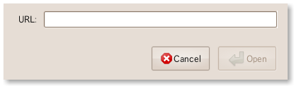

WAT (WebApplicationTab)
これは何か
Thunderbird 3 のタブにWebページを開くアドオン
機能
-
ブックマーク的にURLメニューに登録できます。
-
"WAT" -> "URLをタブに開く" から任意のURLを開けます
 -
コンテキストメニュー(右クリック)からタブに開けます

-
Thunderbird 3では開くことが出来るタブの数が10個に制限されていますが、必要であればさらに開くことが出来ます。
ビルド方法
$ git clone git://github.com/teramako/wat.git
$ cd wat
$ sh build.sh